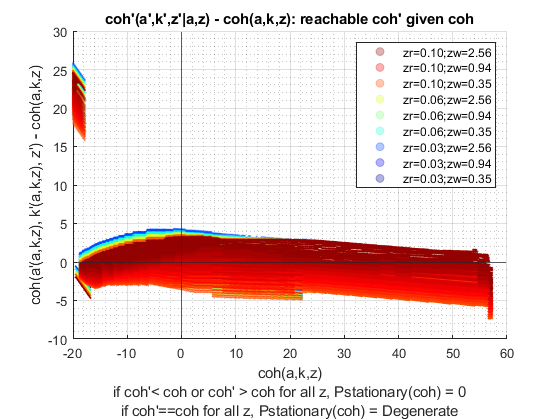
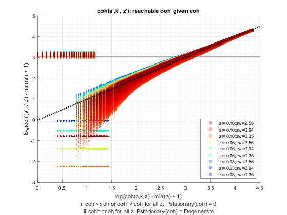

Derive Distributions for Risky + Safe Asset (Save + Borr + R Shock) Interpolated-Percentage (Wrapper)
back to Fan's Dynamic Assets Repository Table of Content.
Contents
function [result_map] = ff_ipwkbzr_ds_wrapper(varargin)
FF_IPWKBZR_DS_WRAPPER finds the stationary asset distributions
This is a warpper function.
Default
- it_subset = 5 is basic invoke quick test
- it_subset = 6 is invoke full test
- it_subset = 7 is profiling invoke
- it_subset = 8 is matlab publish
- it_subset = 9 is invoke operational (only final stats) and coh graph
it_param_set = 8;
[param_map, support_map] = ffs_ipwkbzr_set_default_param(it_param_set);
param_map('bl_default') = true;
Change Parameter to Main Options
st_param_which = 'default'; if (ismember(st_param_which, ["default"])) % default elseif ismember(st_param_which, ["ff_ipwkbz_ds_wrapper"]) % ff_ipwkbzr_evf default param_map('fl_z_r_borr_min') = 0.095; param_map('fl_z_r_borr_max') = 0.095; param_map('fl_z_r_borr_n') = 1; param_map('fl_r_save') = 0.025; param_map('it_z_n') = param_map('it_z_wage_n') * param_map('fl_z_r_borr_n'); end
Adjust Parametesr
% Note: param_map and support_map can be adjusted here or outside to override defaults % param_map('it_w_perc_n') = 50; % param_map('it_ak_perc_n') = param_map('it_w_perc_n'); % param_map('it_z_n') = 15; % param_map('fl_coh_interp_grid_gap') = 0.025; % param_map('it_c_interp_grid_gap') = 0.001; % param_map('fl_w_interp_grid_gap') = 0.25; % param_map('it_w_perc_n') = 100; % param_map('it_ak_perc_n') = param_map('it_w_perc_n'); % param_map('it_z_n') = 11; % param_map('fl_coh_interp_grid_gap') = 0.1; % param_map('it_c_interp_grid_gap') = 10^-4; % param_map('fl_w_interp_grid_gap') = 0.1; % param_map('it_w_perc_n') = 100; % param_map('fl_r_save') = 0.025; % param_map('fl_c_min') = 0.02;
Set Distribution Derivation Types
% param_map('st_analytical_stationary_type') = 'loop'; % param_map('st_analytical_stationary_type') = 'vector'; param_map('st_analytical_stationary_type') = 'eigenvector';
Generate Grids
get armt and func map
[armt_map, func_map] = ffs_ipwkbzr_get_funcgrid(param_map, support_map); % 1 for override
default_params = {param_map support_map armt_map func_map};
Parse Parameters 1
% if varargin only has param_map and support_map, params_len = length(varargin); [default_params{1:params_len}] = varargin{:}; param_map = [param_map; default_params{1}]; support_map = [support_map; default_params{2}]; if params_len >= 1 && params_len <= 2 % If override param_map, re-generate armt and func if they are not % provided [armt_map, func_map] = ffs_ipwkbzr_get_funcgrid(param_map, support_map); else % Override all armt_map = [armt_map; default_params{3}]; func_map = [func_map; default_params{4}]; end % if profile, profile DP + Dist here support_map('bl_profile_dist') = false; % append function name st_func_name = 'ff_ipwkbzr_ds_wrapper'; support_map('st_profile_name_main') = [st_func_name support_map('st_profile_name_main')]; support_map('st_mat_name_main') = [st_func_name support_map('st_mat_name_main')]; support_map('st_img_name_main') = [st_func_name support_map('st_img_name_main')];
Parse Parameters
% param_map params_group = values(param_map, {'st_analytical_stationary_type'}); [st_analytical_stationary_type] = params_group{:}; % support_map params_group = values(support_map, ... {'st_profile_path', 'st_profile_prefix', 'st_profile_name_main', 'st_profile_suffix','bl_time'}); [st_profile_path, st_profile_prefix, st_profile_name_main, st_profile_suffix, bl_time] = params_group{:};
Start Profiler and Timer
Start Profile
if (it_param_set == 7) close all; profile off; profile on; end % Start Timer if (bl_time) tic; end
Solve DP
bl_input_override = true; result_map = ff_ipwkbzr_vf_vecsv(param_map, support_map, armt_map, func_map);
Elapsed time is 22.213762 seconds.
----------------------------------------
----------------------------------------
xxxxxxxxxxxxxxxxxxxxxxxxxxxxxxxxxxxxxxxx
xxxxxxxxxxxxxxxxxxxxxxxxxxxxxxxxxxxxxxxx
Begin: Show all key and value pairs from container
CONTAINER NAME: SUPPORT_MAP
----------------------------------------
Map with properties:
Count: 43
KeyType: char
ValueType: any
xxxxxxxxxxxxxxxxxxxxxxxxxxxxxxxxxxxxxxxx
xxxxxxxxxxxxxxxxxxxxxxxxxxxxxxxxxxxxxxxx
----------------------------------------
----------------------------------------
pos = 1 ; key = bl_display ; val = false
pos = 2 ; key = bl_display_defparam ; val = true
pos = 3 ; key = bl_display_dist ; val = false
pos = 4 ; key = bl_display_evf ; val = false
pos = 5 ; key = bl_display_final ; val = false
pos = 6 ; key = bl_display_final_dist ; val = true
pos = 7 ; key = bl_display_final_dist_detail ; val = true
pos = 8 ; key = bl_display_funcgrids ; val = false
pos = 9 ; key = bl_graph ; val = true
pos = 10 ; key = bl_graph_coh_t_coh ; val = true
pos = 11 ; key = bl_graph_evf ; val = false
pos = 12 ; key = bl_graph_funcgrids ; val = false
pos = 13 ; key = bl_graph_funcgrids_detail ; val = false
pos = 14 ; key = bl_graph_onebyones ; val = true
pos = 15 ; key = bl_graph_pol_lvl ; val = false
pos = 16 ; key = bl_graph_pol_pct ; val = false
pos = 17 ; key = bl_graph_val ; val = false
pos = 18 ; key = bl_img_save ; val = false
pos = 19 ; key = bl_mat ; val = false
pos = 20 ; key = bl_post ; val = true
pos = 21 ; key = bl_profile ; val = false
pos = 22 ; key = bl_profile_dist ; val = false
pos = 23 ; key = bl_time ; val = true
pos = 24 ; key = it_display_every ; val = 20
pos = 25 ; key = it_display_final_colmax ; val = 12
pos = 26 ; key = it_display_final_rowmax ; val = 100
pos = 27 ; key = it_display_summmat_colmax ; val = 7
pos = 28 ; key = it_display_summmat_rowmax ; val = 7
pos = 29 ; key = st_img_name_main ; val = ff_ipwkbzr_vf_vecsvff_ipwkbzr_ds_wrapper_default
pos = 30 ; key = st_img_path ; val = C:/Users/fan/CodeDynaAsset//m_ipwkbzr//solve/img/
pos = 31 ; key = st_img_prefix ; val =
pos = 32 ; key = st_img_suffix ; val = _p8.png
pos = 33 ; key = st_mat_name_main ; val = ff_ipwkbzr_vf_vecsvff_ipwkbzr_ds_wrapper_default
pos = 34 ; key = st_mat_path ; val = C:/Users/fan/CodeDynaAsset//m_ipwkbzr//solve/mat/
pos = 35 ; key = st_mat_prefix ; val =
pos = 36 ; key = st_mat_suffix ; val = _p8
pos = 37 ; key = st_mat_test_path ; val = C:/Users/fan/CodeDynaAsset//m_ipwkbzr//test/ff_ipwkbzr_ds_vecsv/mat/
pos = 38 ; key = st_matimg_path_root ; val = C:/Users/fan/CodeDynaAsset//m_ipwkbzr/
pos = 39 ; key = st_profile_name_main ; val = ff_ipwkbzr_vf_vecsvff_ipwkbzr_ds_wrapper_default
pos = 40 ; key = st_profile_path ; val = C:/Users/fan/CodeDynaAsset//m_ipwkbzr//solve/profile/
pos = 41 ; key = st_profile_prefix ; val =
pos = 42 ; key = st_profile_suffix ; val = _p8
pos = 43 ; key = st_title_prefix ; val =
----------------------------------------
xxxxxxxxxxxxxxxxxxxxxxxxxxxxxxxxxxxxxxxx
Scalars in Container and Sizes and Basic Statistics
xxxxxxxxxxxxxxxxxxxxxxxxxxxxxxxxxxxxxxxx
i idx value
__ ___ _____
bl_display 1 1 0
bl_display_defparam 2 2 1
bl_display_dist 3 3 0
bl_display_evf 4 4 0
bl_display_final 5 5 0
bl_display_final_dist 6 6 1
bl_display_final_dist_detail 7 7 1
bl_display_funcgrids 8 8 0
bl_graph 9 9 1
bl_graph_coh_t_coh 10 10 1
bl_graph_evf 11 11 0
bl_graph_funcgrids 12 12 0
bl_graph_funcgrids_detail 13 13 0
bl_graph_onebyones 14 14 1
bl_graph_pol_lvl 15 15 0
bl_graph_pol_pct 16 16 0
bl_graph_val 17 17 0
bl_img_save 18 18 0
bl_mat 19 19 0
bl_post 20 20 1
bl_profile 21 21 0
bl_profile_dist 22 22 0
bl_time 23 23 1
it_display_every 24 24 20
it_display_final_colmax 25 25 12
it_display_final_rowmax 26 26 100
it_display_summmat_colmax 27 27 7
it_display_summmat_rowmax 28 28 7
----------------------------------------
xxxxxxxxxxxxxxxxxxxxxxxxxxxxxxxxxxxxxxxx
Strings in Container and Sizes and Basic Statistics
xxxxxxxxxxxxxxxxxxxxxxxxxxxxxxxxxxxxxxxx
i idx
__ ___
st_img_name_main 1 29
st_img_path 2 30
st_img_prefix 3 31
st_img_suffix 4 32
st_mat_name_main 5 33
st_mat_path 6 34
st_mat_prefix 7 35
st_mat_suffix 8 36
st_mat_test_path 9 37
st_matimg_path_root 10 38
st_profile_name_main 11 39
st_profile_path 12 40
st_profile_prefix 13 41
st_profile_suffix 14 42
st_title_prefix 15 43
----------------------------------------
----------------------------------------
xxxxxxxxxxxxxxxxxxxxxxxxxxxxxxxxxxxxxxxx
xxxxxxxxxxxxxxxxxxxxxxxxxxxxxxxxxxxxxxxx
Begin: Show all key and value pairs from container
CONTAINER NAME: ARMT_MAP
----------------------------------------
Map with properties:
Count: 34
KeyType: char
ValueType: any
xxxxxxxxxxxxxxxxxxxxxxxxxxxxxxxxxxxxxxxx
xxxxxxxxxxxxxxxxxxxxxxxxxxxxxxxxxxxxxxxx
----------------------------------------
----------------------------------------
pos = 1 ; key = ar_a_meshk ;rown= 772 ,coln= 1
ar_a_meshk :mu= 18.6048 ,sd= 22.3414 ,min= -20 ,max= 57.2579
zi_1_c1
_______
zi_1_R1 -20
zi_2_R2 -19.9
zi_3_R3 -19.799
zi_386_r386 18.529
zi_770_r770 57.057
zi_771_r771 57.158
zi_772_r772 57.258
pos = 2 ; key = ar_a_meshk_ori ;rown= 35000 ,coln= 1
ar_a_meshk_ori :mu= -2.5107 ,sd= 15.6183 ,min= -20 ,max= 50
zi_1_c1
_______
zi_1_R1 -20
zi_2_R2 -20
zi_3_R3 -20
zi_17500_r17500 -20
zi_34998_r34998 -17.143
zi_34999_r34999 -18.571
zi_35000_r35000 -20
pos = 3 ; key = ar_ak_perc ;rown= 1 ,coln= 50
ar_ak_perc :mu= 0.5 ,sd= 0.2975 ,min= 0 ,max= 1
zi_1_C1 zi_2_C2 zi_3_C3 zi_25_c25 zi_48_c48 zi_49_c49 zi_50_c50
_______ ________ ________ _________ _________ _________ _________
zi_1_r1 0 0.020408 0.040816 0.4898 0.95918 0.97959 1
pos = 4 ; key = ar_aplusk_mesh ;rown= 35000 ,coln= 1
ar_aplusk_mesh :mu= 14.9786 ,sd= 20.23 ,min= -20 ,max= 50
zi_1_c1
_______
zi_1_R1 -20
zi_2_R2 -20
zi_3_R3 -20
zi_17500_r17500 14.9
zi_34998_r34998 50
zi_34999_r34999 50
zi_35000_r35000 50
pos = 5 ; key = ar_interp_c_grid ;rown= 1 ,coln= 772378
ar_interp_c_grid :mu= 38.6389 ,sd= 22.2967 ,min= 0.02 ,max= 77.2579
zi_1_C1 zi_2_C2 zi_3_C3 zi_386189_c386189 zi_772376_c772376 zi_772377_c772377 zi_772378_c772378
_______ _______ _______ _________________ _________________ _________________ _________________
zi_1_r1 0.02 0.0201 0.0202 38.639 77.258 77.258 77.258
pos = 6 ; key = ar_interp_coh_grid ;rown= 1 ,coln= 772
ar_interp_coh_grid :mu= 18.6048 ,sd= 22.3414 ,min= -20 ,max= 57.2579
zi_1_C1 zi_2_C2 zi_3_C3 zi_386_c386 zi_770_c770 zi_771_c771 zi_772_c772
_______ _______ _______ ___________ ___________ ___________ ___________
zi_1_r1 -20 -19.9 -19.799 18.529 57.057 57.158 57.258
pos = 7 ; key = ar_k_mesha ;rown= 772 ,coln= 1
ar_k_mesha :mu= 0 ,sd= 0 ,min= 0 ,max= 0
zi_1_c1
_______
zi_1_R1 0
zi_2_R2 0
zi_3_R3 0
zi_386_r386 0
zi_770_r770 0
zi_771_r771 0
zi_772_r772 0
pos = 8 ; key = ar_k_mesha_ori ;rown= 35000 ,coln= 1
ar_k_mesha_ori :mu= 17.4893 ,sd= 15.6183 ,min= 0 ,max= 70
zi_1_c1
_______
zi_1_R1 0
zi_2_R2 0
zi_3_R3 0
zi_17500_r17500 34.9
zi_34998_r34998 67.143
zi_34999_r34999 68.571
zi_35000_r35000 70
pos = 9 ; key = ar_w_level ;rown= 1 ,coln= 700
ar_w_level :mu= 14.9786 ,sd= 20.2441 ,min= -20 ,max= 50
zi_1_C1 zi_2_C2 zi_3_C3 zi_350_c350 zi_698_c698 zi_699_c699 zi_700_c700
_______ _______ _______ ___________ ___________ ___________ ___________
zi_1_r1 -20 -19.9 -19.799 14.9 49.799 49.9 50
pos = 10 ; key = ar_w_perc ;rown= 1 ,coln= 50
ar_w_perc :mu= 0.5 ,sd= 0.2975 ,min= 0 ,max= 1
zi_1_C1 zi_2_C2 zi_3_C3 zi_25_c25 zi_48_c48 zi_49_c49 zi_50_c50
_______ ________ ________ _________ _________ _________ _________
zi_1_r1 0 0.020408 0.040816 0.4898 0.95918 0.97959 1
pos = 11 ; key = ar_z_r_borr ;rown= 1 ,coln= 5
ar_z_r_borr :mu= 0.06 ,sd= 0.02767 ,min= 0.025 ,max= 0.095
zi_1_c1 zi_2_c2 zi_3_c3 zi_4_c4 zi_5_c5
_______ _______ _______ _______ _______
zi_1_r1 0.025 0.0425 0.06 0.0775 0.095
pos = 12 ; key = ar_z_r_borr_mesh_wage_r1w2 ;rown= 1 ,coln= 55
ar_z_r_borr_mesh_wage_r1w2 :mu= 0.06 ,sd= 0.024977 ,min= 0.025 ,max= 0.095
zi_1_C1 zi_2_C2 zi_3_C3 zi_28_c28 zi_53_c53 zi_54_c54 zi_55_c55
_______ _______ _______ _________ _________ _________ _________
zi_1_r1 0.025 0.0425 0.06 0.06 0.06 0.0775 0.095
pos = 13 ; key = ar_z_r_borr_mesh_wage_w1r2 ;rown= 1 ,coln= 55
ar_z_r_borr_mesh_wage_w1r2 :mu= 0.06 ,sd= 0.024977 ,min= 0.025 ,max= 0.095
zi_1_C1 zi_2_C2 zi_3_C3 zi_28_c28 zi_53_c53 zi_54_c54 zi_55_c55
_______ _______ _______ _________ _________ _________ _________
zi_1_r1 0.025 0.025 0.025 0.06 0.095 0.095 0.095
pos = 14 ; key = ar_z_r_borr_prob ;rown= 1 ,coln= 5
ar_z_r_borr_prob :mu= 0.2 ,sd= 0.34803 ,min= 0.00012164 ,max= 0.81093
zi_1_c1 zi_2_c2 zi_3_c3 zi_4_c4 zi_5_c5
__________ _________ ________ _______ _______
zi_1_r1 0.00012164 0.0024328 0.024328 0.16219 0.81093
pos = 15 ; key = ar_z_wage ;rown= 1 ,coln= 11
ar_z_wage :mu= 1.1422 ,sd= 0.72828 ,min= 0.34664 ,max= 2.5613
zi_1_C1 zi_2_C2 zi_3_C3 zi_6_C6 zi_9_C9 zi_10_c10 zi_11_c11
_______ _______ _______ _______ _______ _________ _________
zi_1_r1 0.34664 0.42338 0.51712 0.94226 1.7169 2.097 2.5613
pos = 16 ; key = ar_z_wage_mesh_r_borr_r1w2 ;rown= 1 ,coln= 55
ar_z_wage_mesh_r_borr_r1w2 :mu= 1.1422 ,sd= 0.70079 ,min= 0.34664 ,max= 2.5613
zi_1_C1 zi_2_C2 zi_3_C3 zi_28_c28 zi_53_c53 zi_54_c54 zi_55_c55
_______ _______ _______ _________ _________ _________ _________
zi_1_r1 0.34664 0.34664 0.34664 0.94226 2.5613 2.5613 2.5613
pos = 17 ; key = ar_z_wage_mesh_r_borr_w1r2 ;rown= 1 ,coln= 55
ar_z_wage_mesh_r_borr_w1r2 :mu= 1.1422 ,sd= 0.70079 ,min= 0.34664 ,max= 2.5613
zi_1_C1 zi_2_C2 zi_3_C3 zi_28_c28 zi_53_c53 zi_54_c54 zi_55_c55
_______ _______ _______ _________ _________ _________ _________
zi_1_r1 0.34664 0.42338 0.51712 0.94226 1.7169 2.097 2.5613
pos = 18 ; key = ar_z_wage_prob ;rown= 1 ,coln= 11
ar_z_wage_prob :mu= 0.090909 ,sd= 0.084822 ,min= 0.0039324 ,max= 0.23011
zi_1_C1 zi_2_C2 zi_3_C3 zi_6_C6 zi_9_C9 zi_10_c10 zi_11_c11
_________ ________ ________ _______ ________ _________ _________
zi_1_r1 0.0039324 0.016056 0.051615 0.23011 0.051615 0.016056 0.0039324
pos = 19 ; key = cl_mt_coh_wkb_mesh_z_r_borr ;rown= 35000 ,coln= 55
cl_mt_coh_wkb_mesh_z_r_borr :mu= 16.7855 ,sd= 20.5167 ,min= -20.0564 ,max= 57.2579
zi_1_C1 zi_2_C2 zi_3_C3 zi_28_c28 zi_53_c53 zi_54_c54 zi_55_c55
_______ _______ _______ _________ _________ _________ _________
zi_1_R1 -20.056 -20.056 -20.056 -20.056 -20.056 -20.056 -20.056
zi_2_R2 -20.056 -20.056 -20.056 -20.056 -20.056 -20.056 -20.056
zi_3_R3 -20.056 -20.056 -20.056 -20.056 -20.056 -20.056 -20.056
zi_17500_r17500 13.297 13.572 13.909 15.437 18.22 19.585 21.253
zi_34998_r34998 46.22 46.569 46.995 48.928 52.45 54.179 56.29
zi_34999_r34999 46.082 46.433 46.863 48.811 52.36 54.101 56.228
zi_35000_r35000 45.944 46.298 46.731 48.693 52.268 54.023 56.166
pos = 20 ; key = it_ameshk_n ; val = 772
pos = 21 ; key = mt_coh_wkb ;rown= 772 ,coln= 55
mt_coh_wkb :mu= 18.6048 ,sd= 22.3272 ,min= -20 ,max= 57.2579
zi_1_C1 zi_2_C2 zi_3_C3 zi_28_c28 zi_53_c53 zi_54_c54 zi_55_c55
_______ _______ _______ _________ _________ _________ _________
zi_1_R1 -20 -20 -20 -20 -20 -20 -20
zi_2_R2 -19.9 -19.9 -19.9 -19.9 -19.9 -19.9 -19.9
zi_3_R3 -19.799 -19.799 -19.799 -19.799 -19.799 -19.799 -19.799
zi_386_r386 18.529 18.529 18.529 18.529 18.529 18.529 18.529
zi_770_r770 57.057 57.057 57.057 57.057 57.057 57.057 57.057
zi_771_r771 57.158 57.158 57.158 57.158 57.158 57.158 57.158
zi_772_r772 57.258 57.258 57.258 57.258 57.258 57.258 57.258
pos = 22 ; key = mt_coh_wkb_mesh_z_r_borr ;rown= 175000 ,coln= 55
mt_coh_wkb_mesh_z_r_borr :mu= 16.5074 ,sd= 20.6844 ,min= -21.4564 ,max= 57.2579
zi_1_C1 zi_2_C2 zi_3_C3 zi_28_c28 zi_53_c53 zi_54_c54 zi_55_c55
_______ _______ _______ _________ _________ _________ _________
zi_1_R1 -20.056 -20.056 -20.056 -20.056 -20.056 -20.056 -20.056
zi_2_R2 -20.056 -20.056 -20.056 -20.056 -20.056 -20.056 -20.056
zi_3_R3 -20.056 -20.056 -20.056 -20.056 -20.056 -20.056 -20.056
zi_87500_R87500 12.597 12.872 13.209 14.737 17.52 18.885 20.553
zi_174998_r174998 45.02 45.369 45.795 47.728 51.25 52.979 55.09
zi_174999_r174999 44.782 45.133 45.563 47.511 51.06 52.801 54.928
zi_175000_r175000 44.544 44.898 45.331 47.293 50.868 52.623 54.766
pos = 23 ; key = mt_coh_wkb_ori ;rown= 175000 ,coln= 11
mt_coh_wkb_ori :mu= 16.5074 ,sd= 20.6844 ,min= -21.4564 ,max= 57.2579
zi_1_C1 zi_2_C2 zi_3_C3 zi_6_C6 zi_9_C9 zi_10_c10 zi_11_c11
_______ _______ _______ _______ _______ _________ _________
zi_1_R1 -20.056 -20.056 -20.056 -20.056 -20.056 -20.056 -20.056
zi_2_R2 -20.056 -20.056 -20.056 -20.056 -20.056 -20.056 -20.056
zi_3_R3 -20.056 -20.056 -20.056 -20.056 -20.056 -20.056 -20.056
zi_87500_R87500 12.597 12.872 13.209 14.737 17.52 18.885 20.553
zi_174998_r174998 45.02 45.369 45.795 47.728 51.25 52.979 55.09
zi_174999_r174999 44.782 45.133 45.563 47.511 51.06 52.801 54.928
zi_175000_r175000 44.544 44.898 45.331 47.293 50.868 52.623 54.766
pos = 24 ; key = mt_interp_coh_grid_mesh_w_perc ;rown= 50 ,coln= 772
mt_interp_coh_grid_mesh_w_perc :mu= 18.6048 ,sd= 22.3273 ,min= -20 ,max= 57.2579
zi_1_C1 zi_2_C2 zi_3_C3 zi_386_c386 zi_770_c770 zi_771_c771 zi_772_c772
_______ _______ _______ ___________ ___________ ___________ ___________
zi_1_R1 -20 -19.9 -19.799 18.529 57.057 57.158 57.258
zi_2_R2 -20 -19.9 -19.799 18.529 57.057 57.158 57.258
zi_3_R3 -20 -19.9 -19.799 18.529 57.057 57.158 57.258
zi_25_r25 -20 -19.9 -19.799 18.529 57.057 57.158 57.258
zi_48_r48 -20 -19.9 -19.799 18.529 57.057 57.158 57.258
zi_49_r49 -20 -19.9 -19.799 18.529 57.057 57.158 57.258
zi_50_r50 -20 -19.9 -19.799 18.529 57.057 57.158 57.258
pos = 25 ; key = mt_interp_coh_grid_mesh_z ;rown= 772 ,coln= 55
mt_interp_coh_grid_mesh_z :mu= 18.6048 ,sd= 22.3272 ,min= -20 ,max= 57.2579
zi_1_C1 zi_2_C2 zi_3_C3 zi_28_c28 zi_53_c53 zi_54_c54 zi_55_c55
_______ _______ _______ _________ _________ _________ _________
zi_1_R1 -20 -20 -20 -20 -20 -20 -20
zi_2_R2 -19.9 -19.9 -19.9 -19.9 -19.9 -19.9 -19.9
zi_3_R3 -19.799 -19.799 -19.799 -19.799 -19.799 -19.799 -19.799
zi_386_r386 18.529 18.529 18.529 18.529 18.529 18.529 18.529
zi_770_r770 57.057 57.057 57.057 57.057 57.057 57.057 57.057
zi_771_r771 57.158 57.158 57.158 57.158 57.158 57.158 57.158
zi_772_r772 57.258 57.258 57.258 57.258 57.258 57.258 57.258
pos = 26 ; key = mt_interp_coh_grid_mesh_z_wage ;rown= 772 ,coln= 11
mt_interp_coh_grid_mesh_z_wage :mu= 18.6048 ,sd= 22.3283 ,min= -20 ,max= 57.2579
zi_1_C1 zi_2_C2 zi_3_C3 zi_6_C6 zi_9_C9 zi_10_c10 zi_11_c11
_______ _______ _______ _______ _______ _________ _________
zi_1_R1 -20 -20 -20 -20 -20 -20 -20
zi_2_R2 -19.9 -19.9 -19.9 -19.9 -19.9 -19.9 -19.9
zi_3_R3 -19.799 -19.799 -19.799 -19.799 -19.799 -19.799 -19.799
zi_386_r386 18.529 18.529 18.529 18.529 18.529 18.529 18.529
zi_770_r770 57.057 57.057 57.057 57.057 57.057 57.057 57.057
zi_771_r771 57.158 57.158 57.158 57.158 57.158 57.158 57.158
zi_772_r772 57.258 57.258 57.258 57.258 57.258 57.258 57.258
pos = 27 ; key = mt_k ;rown= 50 ,coln= 700
mt_k :mu= 17.4893 ,sd= 15.6183 ,min= 0 ,max= 70
zi_1_C1 zi_2_C2 zi_3_C3 zi_350_c350 zi_698_c698 zi_699_c699 zi_700_c700
_______ _________ _________ ___________ ___________ ___________ ___________
zi_1_R1 0 0 0 0 0 0 0
zi_2_R2 0 0.0020467 0.0040933 0.71224 1.4245 1.4265 1.4286
zi_3_R3 0 0.0040933 0.0081867 1.4245 2.849 2.853 2.8571
zi_25_r25 0 0.04912 0.09824 17.094 34.187 34.237 34.286
zi_48_r48 0 0.096193 0.19239 33.475 66.95 67.047 67.143
zi_49_r49 0 0.09824 0.19648 34.187 68.375 68.473 68.571
zi_50_r50 0 0.10029 0.20057 34.9 69.799 69.9 70
pos = 28 ; key = mt_w_perc_mesh_interp_coh_grid ;rown= 50 ,coln= 772
mt_w_perc_mesh_interp_coh_grid :mu= -0.6976 ,sd= 17.2375 ,min= -20 ,max= 57.2579
zi_1_C1 zi_2_C2 zi_3_C3 zi_386_c386 zi_770_c770 zi_771_c771 zi_772_c772
_______ _______ _______ ___________ ___________ ___________ ___________
zi_1_R1 -20 -20 -20 -20 -20 -20 -20
zi_2_R2 -20 -19.998 -19.996 -19.214 -18.427 -18.425 -18.423
zi_3_R3 -20 -19.996 -19.992 -18.427 -16.855 -16.851 -16.847
zi_25_r25 -20 -19.951 -19.902 -1.1288 17.742 17.791 17.841
zi_48_r48 -20 -19.904 -19.808 16.956 53.912 54.008 54.104
zi_49_r49 -20 -19.902 -19.803 17.742 55.485 55.583 55.681
zi_50_r50 -20 -19.9 -19.799 18.529 57.057 57.158 57.258
pos = 29 ; key = mt_z_mesh_coh_wkb ;rown= 175000 ,coln= 55
mt_z_mesh_coh_wkb :mu= 28 ,sd= 15.8745 ,min= 1 ,max= 55
zi_1_C1 zi_2_C2 zi_3_C3 zi_28_c28 zi_53_c53 zi_54_c54 zi_55_c55
_______ _______ _______ _________ _________ _________ _________
zi_1_R1 1 2 3 28 53 54 55
zi_2_R2 1 2 3 28 53 54 55
zi_3_R3 1 2 3 28 53 54 55
zi_87500_R87500 1 2 3 28 53 54 55
zi_174998_r174998 1 2 3 28 53 54 55
zi_174999_r174999 1 2 3 28 53 54 55
zi_175000_r175000 1 2 3 28 53 54 55
pos = 30 ; key = mt_z_mesh_coh_wkb_seg ;rown= 35000 ,coln= 55
mt_z_mesh_coh_wkb_seg :mu= 28 ,sd= 15.8745 ,min= 1 ,max= 55
zi_1_C1 zi_2_C2 zi_3_C3 zi_28_c28 zi_53_c53 zi_54_c54 zi_55_c55
_______ _______ _______ _________ _________ _________ _________
zi_1_R1 1 2 3 28 53 54 55
zi_2_R2 1 2 3 28 53 54 55
zi_3_R3 1 2 3 28 53 54 55
zi_17500_r17500 1 2 3 28 53 54 55
zi_34998_r34998 1 2 3 28 53 54 55
zi_34999_r34999 1 2 3 28 53 54 55
zi_35000_r35000 1 2 3 28 53 54 55
pos = 31 ; key = mt_z_mesh_interp_coh_grid ;rown= 772 ,coln= 55
mt_z_mesh_interp_coh_grid :mu= 28 ,sd= 15.8747 ,min= 1 ,max= 55
zi_1_C1 zi_2_C2 zi_3_C3 zi_28_c28 zi_53_c53 zi_54_c54 zi_55_c55
_______ _______ _______ _________ _________ _________ _________
zi_1_R1 1 2 3 28 53 54 55
zi_2_R2 1 2 3 28 53 54 55
zi_3_R3 1 2 3 28 53 54 55
zi_386_r386 1 2 3 28 53 54 55
zi_770_r770 1 2 3 28 53 54 55
zi_771_r771 1 2 3 28 53 54 55
zi_772_r772 1 2 3 28 53 54 55
pos = 32 ; key = mt_z_trans ;rown= 55 ,coln= 55
mt_z_trans :mu= 0.018182 ,sd= 0.055867 ,min= 0 ,max= 0.31053
zi_1_C1 zi_2_C2 zi_3_C3 zi_28_c28 zi_53_c53 zi_54_c54 zi_55_c55
__________ __________ __________ __________ __________ __________ __________
zi_1_R1 3.753e-05 4.6579e-05 2.9404e-05 5.5767e-06 3.2541e-11 2.5839e-14 0
zi_2_R2 1.1775e-05 3.4702e-05 4.573e-05 8.1722e-05 4.8493e-09 8.4452e-12 5.4919e-15
zi_3_R3 2.173e-06 1.4329e-05 3.9473e-05 0.00065322 3.8711e-07 1.4718e-09 2.1085e-12
zi_28_r28 4.1329e-10 2.7884e-08 7.2704e-07 0.0093158 0.004847 0.00018589 2.7553e-06
zi_53_r53 3.1628e-16 2.2076e-13 5.8067e-11 0.00065322 0.26315 0.095529 0.014487
zi_54_r54 8.2755e-19 1.2668e-15 7.274e-13 8.1722e-05 0.30487 0.23135 0.078499
zi_55_r55 1.1531e-21 3.8802e-18 4.8812e-15 5.5767e-06 0.19603 0.31053 0.2502
pos = 33 ; key = mt_z_wage_mesh_coh_wkb ;rown= 175000 ,coln= 11
mt_z_wage_mesh_coh_wkb :mu= 1.1422 ,sd= 0.69439 ,min= 0.34664 ,max= 2.5613
zi_1_C1 zi_2_C2 zi_3_C3 zi_6_C6 zi_9_C9 zi_10_c10 zi_11_c11
_______ _______ _______ _______ _______ _________ _________
zi_1_R1 0.34664 0.42338 0.51712 0.94226 1.7169 2.097 2.5613
zi_2_R2 0.34664 0.42338 0.51712 0.94226 1.7169 2.097 2.5613
zi_3_R3 0.34664 0.42338 0.51712 0.94226 1.7169 2.097 2.5613
zi_87500_R87500 0.34664 0.42338 0.51712 0.94226 1.7169 2.097 2.5613
zi_174998_r174998 0.34664 0.42338 0.51712 0.94226 1.7169 2.097 2.5613
zi_174999_r174999 0.34664 0.42338 0.51712 0.94226 1.7169 2.097 2.5613
zi_175000_r175000 0.34664 0.42338 0.51712 0.94226 1.7169 2.097 2.5613
pos = 34 ; key = mt_z_wage_mesh_interp_coh_grid ;rown= 772 ,coln= 11
mt_z_wage_mesh_interp_coh_grid :mu= 1.1422 ,sd= 0.69443 ,min= 0.34664 ,max= 2.5613
zi_1_C1 zi_2_C2 zi_3_C3 zi_6_C6 zi_9_C9 zi_10_c10 zi_11_c11
_______ _______ _______ _______ _______ _________ _________
zi_1_R1 0.34664 0.42338 0.51712 0.94226 1.7169 2.097 2.5613
zi_2_R2 0.34664 0.42338 0.51712 0.94226 1.7169 2.097 2.5613
zi_3_R3 0.34664 0.42338 0.51712 0.94226 1.7169 2.097 2.5613
zi_386_r386 0.34664 0.42338 0.51712 0.94226 1.7169 2.097 2.5613
zi_770_r770 0.34664 0.42338 0.51712 0.94226 1.7169 2.097 2.5613
zi_771_r771 0.34664 0.42338 0.51712 0.94226 1.7169 2.097 2.5613
zi_772_r772 0.34664 0.42338 0.51712 0.94226 1.7169 2.097 2.5613
----------------------------------------
xxxxxxxxxxxxxxxxxxxxxxxxxxxxxxxxxxxxxxxx
Matrix in Container and Sizes and Basic Statistics
xxxxxxxxxxxxxxxxxxxxxxxxxxxxxxxxxxxxxxxx
i idx rowN colN mean std min max
__ ___ ________ __________ ________ ________ __________ _______
ar_a_meshk 1 1 772 1 18.605 22.341 -20 57.258
ar_a_meshk_ori 2 2 35000 1 -2.5107 15.618 -20 50
ar_ak_perc 3 3 1 50 0.5 0.2975 0 1
ar_aplusk_mesh 4 4 35000 1 14.979 20.23 -20 50
ar_interp_c_grid 5 5 1 7.7238e+05 38.639 22.297 0.02 77.258
ar_interp_coh_grid 6 6 1 772 18.605 22.341 -20 57.258
ar_k_mesha 7 7 772 1 0 0 0 0
ar_k_mesha_ori 8 8 35000 1 17.489 15.618 0 70
ar_w_level 9 9 1 700 14.979 20.244 -20 50
ar_w_perc 10 10 1 50 0.5 0.2975 0 1
ar_z_r_borr 11 11 1 5 0.06 0.02767 0.025 0.095
ar_z_r_borr_mesh_wage_r1w2 12 12 1 55 0.06 0.024977 0.025 0.095
ar_z_r_borr_mesh_wage_w1r2 13 13 1 55 0.06 0.024977 0.025 0.095
ar_z_r_borr_prob 14 14 1 5 0.2 0.34803 0.00012164 0.81093
ar_z_wage 15 15 1 11 1.1422 0.72828 0.34664 2.5613
ar_z_wage_mesh_r_borr_r1w2 16 16 1 55 1.1422 0.70079 0.34664 2.5613
ar_z_wage_mesh_r_borr_w1r2 17 17 1 55 1.1422 0.70079 0.34664 2.5613
ar_z_wage_prob 18 18 1 11 0.090909 0.084822 0.0039324 0.23011
cl_mt_coh_wkb_mesh_z_r_borr 19 19 35000 55 16.785 20.517 -20.056 57.258
mt_coh_wkb 20 21 772 55 18.605 22.327 -20 57.258
mt_coh_wkb_mesh_z_r_borr 21 22 1.75e+05 55 16.507 20.684 -21.456 57.258
mt_coh_wkb_ori 22 23 1.75e+05 11 16.507 20.684 -21.456 57.258
mt_interp_coh_grid_mesh_w_perc 23 24 50 772 18.605 22.327 -20 57.258
mt_interp_coh_grid_mesh_z 24 25 772 55 18.605 22.327 -20 57.258
mt_interp_coh_grid_mesh_z_wage 25 26 772 11 18.605 22.328 -20 57.258
mt_k 26 27 50 700 17.489 15.618 0 70
mt_w_perc_mesh_interp_coh_grid 27 28 50 772 -0.6976 17.237 -20 57.258
mt_z_mesh_coh_wkb 28 29 1.75e+05 55 28 15.875 1 55
mt_z_mesh_coh_wkb_seg 29 30 35000 55 28 15.875 1 55
mt_z_mesh_interp_coh_grid 30 31 772 55 28 15.875 1 55
mt_z_trans 31 32 55 55 0.018182 0.055867 0 0.31053
mt_z_wage_mesh_coh_wkb 32 33 1.75e+05 11 1.1422 0.69439 0.34664 2.5613
mt_z_wage_mesh_interp_coh_grid 33 34 772 11 1.1422 0.69443 0.34664 2.5613
----------------------------------------
xxxxxxxxxxxxxxxxxxxxxxxxxxxxxxxxxxxxxxxx
Scalars in Container and Sizes and Basic Statistics
xxxxxxxxxxxxxxxxxxxxxxxxxxxxxxxxxxxxxxxx
i idx value
_ ___ _____
it_ameshk_n 1 20 772
----------------------------------------
----------------------------------------
xxxxxxxxxxxxxxxxxxxxxxxxxxxxxxxxxxxxxxxx
xxxxxxxxxxxxxxxxxxxxxxxxxxxxxxxxxxxxxxxx
Begin: Show all key and value pairs from container
CONTAINER NAME: PARAM_MAP
----------------------------------------
Map with properties:
Count: 41
KeyType: char
ValueType: any
xxxxxxxxxxxxxxxxxxxxxxxxxxxxxxxxxxxxxxxx
xxxxxxxxxxxxxxxxxxxxxxxxxxxxxxxxxxxxxxxx
----------------------------------------
----------------------------------------
pos = 1 ; key = bl_default ; val = true
pos = 2 ; key = fl_Amean ; val = 1
pos = 3 ; key = fl_alpha ; val = 0.36
pos = 4 ; key = fl_b_bd ; val = -20
pos = 5 ; key = fl_beta ; val = 0.94
pos = 6 ; key = fl_c_min ; val = 0.02
pos = 7 ; key = fl_coh_interp_grid_gap ; val = 0.1
pos = 8 ; key = fl_crra ; val = 1.5
pos = 9 ; key = fl_default_wprime ; val = 0
pos = 10 ; key = fl_delta ; val = 0.08
pos = 11 ; key = fl_k_max ; val = 70
pos = 12 ; key = fl_k_min ; val = 0
pos = 13 ; key = fl_nan_replace ; val = -9999
pos = 14 ; key = fl_r_save ; val = 0.025
pos = 15 ; key = fl_tol_dist ; val = 1e-05
pos = 16 ; key = fl_tol_pol ; val = 1e-05
pos = 17 ; key = fl_tol_val ; val = 1e-05
pos = 18 ; key = fl_w ; val = 0.44365
pos = 19 ; key = fl_w_interp_grid_gap ; val = 0.1
pos = 20 ; key = fl_w_max ; val = 50
pos = 21 ; key = fl_w_min ; val = -20
pos = 22 ; key = fl_z_r_borr_max ; val = 0.095
pos = 23 ; key = fl_z_r_borr_min ; val = 0.025
pos = 24 ; key = fl_z_r_borr_n ; val = 5
pos = 25 ; key = fl_z_r_borr_poiss_mean ; val = 20
pos = 26 ; key = fl_z_wage_mu ; val = 0
pos = 27 ; key = fl_z_wage_rho ; val = 0.8
pos = 28 ; key = fl_z_wage_sig ; val = 0.2
pos = 29 ; key = it_ak_perc_n ; val = 50
pos = 30 ; key = it_c_interp_grid_gap ; val = 0.0001
pos = 31 ; key = it_maxiter_dist ; val = 1000
pos = 32 ; key = it_maxiter_val ; val = 250
pos = 33 ; key = it_tol_pol_nochange ; val = 25
pos = 34 ; key = it_w_perc_n ; val = 50
pos = 35 ; key = it_z_n ; val = 55
pos = 36 ; key = it_z_wage_n ; val = 11
pos = 37 ; key = st_analytical_stationary_type ; val = eigenvector
pos = 38 ; key = st_model ; val = ipwkbzr
pos = 39 ; key = st_v_coh_z_interp_method ; val = method_cell
pos = 40 ; key = st_z_r_borr_drv_ele_type ; val = unif
pos = 41 ; key = st_z_r_borr_drv_prb_type ; val = poiss
----------------------------------------
xxxxxxxxxxxxxxxxxxxxxxxxxxxxxxxxxxxxxxxx
Scalars in Container and Sizes and Basic Statistics
xxxxxxxxxxxxxxxxxxxxxxxxxxxxxxxxxxxxxxxx
i idx value
__ ___ _______
bl_default 1 1 1
fl_Amean 2 2 1
fl_alpha 3 3 0.36
fl_b_bd 4 4 -20
fl_beta 5 5 0.94
fl_c_min 6 6 0.02
fl_coh_interp_grid_gap 7 7 0.1
fl_crra 8 8 1.5
fl_default_wprime 9 9 0
fl_delta 10 10 0.08
fl_k_max 11 11 70
fl_k_min 12 12 0
fl_nan_replace 13 13 -9999
fl_r_save 14 14 0.025
fl_tol_dist 15 15 1e-05
fl_tol_pol 16 16 1e-05
fl_tol_val 17 17 1e-05
fl_w 18 18 0.44365
fl_w_interp_grid_gap 19 19 0.1
fl_w_max 20 20 50
fl_w_min 21 21 -20
fl_z_r_borr_max 22 22 0.095
fl_z_r_borr_min 23 23 0.025
fl_z_r_borr_n 24 24 5
fl_z_r_borr_poiss_mean 25 25 20
fl_z_wage_mu 26 26 0
fl_z_wage_rho 27 27 0.8
fl_z_wage_sig 28 28 0.2
it_ak_perc_n 29 29 50
it_c_interp_grid_gap 30 30 0.0001
it_maxiter_dist 31 31 1000
it_maxiter_val 32 32 250
it_tol_pol_nochange 33 33 25
it_w_perc_n 34 34 50
it_z_n 35 35 55
it_z_wage_n 36 36 11
----------------------------------------
xxxxxxxxxxxxxxxxxxxxxxxxxxxxxxxxxxxxxxxx
Strings in Container and Sizes and Basic Statistics
xxxxxxxxxxxxxxxxxxxxxxxxxxxxxxxxxxxxxxxx
i idx
_ ___
st_analytical_stationary_type 1 37
st_model 2 38
st_v_coh_z_interp_method 3 39
st_z_r_borr_drv_ele_type 4 40
st_z_r_borr_drv_prb_type 5 41
----------------------------------------
----------------------------------------
xxxxxxxxxxxxxxxxxxxxxxxxxxxxxxxxxxxxxxxx
xxxxxxxxxxxxxxxxxxxxxxxxxxxxxxxxxxxxxxxx
Begin: Show all key and value pairs from container
CONTAINER NAME: FUNC_MAP
----------------------------------------
Map with properties:
Count: 8
KeyType: char
ValueType: any
xxxxxxxxxxxxxxxxxxxxxxxxxxxxxxxxxxxxxxxx
xxxxxxxxxxxxxxxxxxxxxxxxxxxxxxxxxxxxxxxx
----------------------------------------
----------------------------------------
pos = 1 ; key = f_coh ; val = @(fl_r_borr,z,b,k)(f_prod(z,k)+k*(1-fl_delta)+fl_w+b.*(1+fl_r_save).*(b>0)+b.*(1+fl_r_borr).*(b<=0))
pos = 2 ; key = f_cons ; val = @(coh,bprime,kprime)(coh-kprime-bprime)
pos = 3 ; key = f_inc ; val = @(fl_r_borr,z,b,k)(f_prod(z,k)-(fl_delta)*k+fl_w+b.*(fl_r_save).*(b>0)+b.*(fl_r_borr).*(b<=0))
pos = 4 ; key = f_prod ; val = @(z,k)((fl_Amean.*(z)).*(k.^(fl_alpha)))
pos = 5 ; key = f_util_crra ; val = @(c)(((c).^(1-fl_crra)-1)./(1-fl_crra))
pos = 6 ; key = f_util_log ; val = @(c)log(c)
pos = 7 ; key = f_util_standin ; val = @(fl_r_borr,z,b,k)f_util_log((f_coh(fl_r_borr,z,b,k)-fl_b_bd).*((f_coh(fl_r_borr,z,b,k)-fl_b_bd)>fl_c_min)+fl_c_min.*((f_coh(fl_r_borr,z,b,k)-fl_b_bd)<=fl_c_min))
pos = 8 ; key = f_util_standin_coh ; val = @(coh,fl_r_borr)f_util_log((coh-fl_b_bd).*((coh>0)&(((coh-fl_b_bd)./(1))>fl_c_min))+((coh-fl_b_bd)./(1)).*((coh<=0)&(((coh-fl_b_bd)./(1))>fl_c_min))+(fl_c_min./(1+fl_r_borr)).*((((coh-fl_b_bd)./(1))<=fl_c_min)))
----------------------------------------
xxxxxxxxxxxxxxxxxxxxxxxxxxxxxxxxxxxxxxxx
Scalars in Container and Sizes and Basic Statistics
xxxxxxxxxxxxxxxxxxxxxxxxxxxxxxxxxxxxxxxx
i idx xFunction
_ ___ _________
f_coh 1 1 1
f_cons 2 2 2
f_inc 3 3 3
f_prod 4 4 4
f_util_crra 5 5 5
f_util_log 6 6 6
f_util_standin 7 7 7
f_util_standin_coh 8 8 8
----------------------------------------
----------------------------------------
xxxxxxxxxxxxxxxxxxxxxxxxxxxxxxxxxxxxxxxx
xxxxxxxxxxxxxxxxxxxxxxxxxxxxxxxxxxxxxxxx
Begin: Show all key and value pairs from container
CONTAINER NAME: RESULT_MAP
----------------------------------------
Map with properties:
Count: 11
KeyType: char
ValueType: any
xxxxxxxxxxxxxxxxxxxxxxxxxxxxxxxxxxxxxxxx
xxxxxxxxxxxxxxxxxxxxxxxxxxxxxxxxxxxxxxxx
----------------------------------------
----------------------------------------
pos = 1 ; key = ar_pol_diff_norm ;rown= 151 ,coln= 1
ar_pol_diff_norm :mu= 99.7093 ,sd= 531.213 ,min= 0 ,max= 4777.1503
zi_1_c1
_______
zi_1_R1 4118.6
zi_2_R2 4777.2
zi_3_R3 1652.3
zi_76_R76 3.569
zi_149_r149 0
zi_150_r150 0
zi_151_r151 0
pos = 2 ; key = ar_st_pol_names ; val = cl_mt_coh cl_mt_pol_a cl_mt_pol_k cl_mt_pol_c
pos = 3 ; key = ar_val_diff_norm ;rown= 151 ,coln= 1
ar_val_diff_norm :mu= 16.897 ,sd= 50.7931 ,min= 0.00091128 ,max= 344.085
zi_1_c1
__________
zi_1_R1 344.08
zi_2_R2 287.85
zi_3_R3 246.29
zi_76_R76 0.083623
zi_149_r149 0.0010301
zi_150_r150 0.0009689
zi_151_r151 0.00091128
pos = 4 ; key = cl_mt_coh ;rown= 772 ,coln= 55
cl_mt_coh :mu= 18.6048 ,sd= 22.3272 ,min= -20 ,max= 57.2579
zi_1_C1 zi_2_C2 zi_3_C3 zi_28_c28 zi_53_c53 zi_54_c54 zi_55_c55
_______ _______ _______ _________ _________ _________ _________
zi_1_R1 -20 -20 -20 -20 -20 -20 -20
zi_2_R2 -19.9 -19.9 -19.9 -19.9 -19.9 -19.9 -19.9
zi_3_R3 -19.799 -19.799 -19.799 -19.799 -19.799 -19.799 -19.799
zi_386_r386 18.529 18.529 18.529 18.529 18.529 18.529 18.529
zi_770_r770 57.057 57.057 57.057 57.057 57.057 57.057 57.057
zi_771_r771 57.158 57.158 57.158 57.158 57.158 57.158 57.158
zi_772_r772 57.258 57.258 57.258 57.258 57.258 57.258 57.258
pos = 5 ; key = cl_mt_cons ;rown= 772 ,coln= 55
cl_mt_cons :mu= 2.8757 ,sd= 2.9357 ,min= -20 ,max= 7.8835
zi_1_C1 zi_2_C2 zi_3_C3 zi_28_c28 zi_53_c53 zi_54_c54 zi_55_c55
_______ _______ _______ _________ _________ _________ _________
zi_1_R1 -20 -20 -20 -20 -20 -20 -20
zi_2_R2 -19.9 -19.9 -19.9 -19.9 -19.9 -19.9 -19.9
zi_3_R3 -19.799 -19.799 -19.799 -19.799 -19.799 -19.799 -19.799
zi_386_r386 2.3589 2.3589 3.1452 3.1452 3.1452 3.1452 3.9315
zi_770_r770 7.863 7.863 7.863 7.863 7.863 7.863 7.863
zi_771_r771 7.8732 7.8732 7.8732 7.8732 7.8732 7.8732 7.8732
zi_772_r772 7.8835 7.8835 7.8835 7.8835 7.8835 7.8835 7.8835
pos = 6 ; key = cl_mt_pol_a ;rown= 772 ,coln= 55
cl_mt_pol_a :mu= 8.7882 ,sd= 19.5756 ,min= -20 ,max= 49.154
zi_1_C1 zi_2_C2 zi_3_C3 zi_28_c28 zi_53_c53 zi_54_c54 zi_55_c55
_______ _______ _______ _________ _________ _________ _________
zi_1_R1 -2.0408 -2.449 -2.8571 -4.0816 -5.7143 -7.3469 -9.3878
zi_2_R2 -2.0408 -2.449 -2.8571 -4.0816 -5.7143 -7.3469 -9.3878
zi_3_R3 -2.0408 -2.449 -2.8571 -4.0816 -5.7143 -7.3469 -9.3878
zi_386_r386 13.955 13.955 12.495 8.8844 2.3854 0.21909 -0.23022
zi_770_r770 47.782 46.37 46.37 42.134 35.073 32.249 29.375
zi_771_r771 47.87 46.456 46.456 42.214 35.145 32.317 30.71
zi_772_r772 47.959 46.543 46.543 42.295 36.296 33.464 28.81
pos = 7 ; key = cl_mt_pol_c ;rown= 772 ,coln= 55
cl_mt_pol_c :mu= 3.1163 ,sd= 1.5811 ,min= 0.02 ,max= 7.8835
zi_1_C1 zi_2_C2 zi_3_C3 zi_28_c28 zi_53_c53 zi_54_c54 zi_55_c55
_______ _______ _______ _________ _________ _________ _________
zi_1_R1 0.02 0.02 0.02 0.02 0.02 0.02 0.02
zi_2_R2 0.02 0.02 0.02 0.02 0.02 0.02 0.02
zi_3_R3 0.02 0.02 0.02 0.02 0.02 0.02 0.02
zi_386_r386 2.3589 2.3589 3.1452 3.1452 3.1452 3.1452 3.9315
zi_770_r770 7.863 7.863 7.863 7.863 7.863 7.863 7.863
zi_771_r771 7.8732 7.8732 7.8732 7.8732 7.8732 7.8732 7.8732
zi_772_r772 7.8835 7.8835 7.8835 7.8835 7.8835 7.8835 7.8835
pos = 8 ; key = cl_mt_pol_k ;rown= 772 ,coln= 55
cl_mt_pol_k :mu= 6.9409 ,sd= 5.4654 ,min= 0 ,max= 22.1861
zi_1_C1 zi_2_C2 zi_3_C3 zi_28_c28 zi_53_c53 zi_54_c54 zi_55_c55
_______ _______ _______ _________ _________ _________ _________
zi_1_R1 2.0408 2.449 2.8571 4.0816 5.7143 7.3469 9.3878
zi_2_R2 2.0408 2.449 2.8571 4.0816 5.7143 7.3469 9.3878
zi_3_R3 2.0408 2.449 2.8571 4.0816 5.7143 7.3469 9.3878
zi_386_r386 2.2145 2.2145 2.8884 6.499 12.998 15.164 14.827
zi_770_r770 1.4121 2.8243 2.8243 7.0606 14.121 16.946 19.819
zi_771_r771 1.414 2.8279 2.8279 7.0698 14.14 16.968 18.574
zi_772_r772 1.4158 2.8316 2.8316 7.079 13.079 15.91 20.564
pos = 9 ; key = mt_pol_idx ;rown= 772 ,coln= 55
mt_pol_idx :mu= 19319.2251 ,sd= 11146.1322 ,min= 1 ,max= 38595
zi_1_C1 zi_2_C2 zi_3_C3 zi_28_c28 zi_53_c53 zi_54_c54 zi_55_c55
_______ _______ _______ _________ _________ _________ _________
zi_1_R1 1 1 1 1 1 1 1
zi_2_R2 91 91 91 91 91 91 91
zi_3_R3 146 146 146 146 146 146 146
zi_386_r386 19297 19297 19296 19296 19296 19296 19295
zi_770_r770 38495 38495 38495 38495 38495 38495 38495
zi_771_r771 38545 38545 38545 38545 38545 38545 38545
zi_772_r772 38595 38595 38595 38595 38595 38595 38595
pos = 10 ; key = mt_pol_perc_change ;rown= 151 ,coln= 55
mt_pol_perc_change :mu= 0.077753 ,sd= 0.22502 ,min= 0 ,max= 1
zi_1_C1 zi_2_C2 zi_3_C3 zi_28_c28 zi_53_c53 zi_54_c54 zi_55_c55
_______ _________ _______ _________ _________ _________ _________
zi_1_R1 1 1 1 1 1 1 1
zi_2_R2 0.97474 0.96762 0.9579 0.94689 0.92228 0.89313 0.86334
zi_3_R3 0.9443 0.91321 0.92746 0.94624 0.93782 0.9171 0.89054
zi_76_R76 0 0.0012953 0 0.0012953 0 0.003886 0
zi_149_r149 0 0 0 0 0 0 0
zi_150_r150 0 0 0 0 0 0 0
zi_151_r151 0 0 0 0 0 0 0
pos = 11 ; key = mt_val ;rown= 772 ,coln= 55
mt_val :mu= 8.6496 ,sd= 6.9578 ,min= -9.749 ,max= 16.5949
zi_1_C1 zi_2_C2 zi_3_C3 zi_28_c28 zi_53_c53 zi_54_c54 zi_55_c55
_______ _______ _______ _________ _________ _________ _________
zi_1_R1 -9.6806 -9.3191 -8.8814 -7.3164 -5.3745 -4.6481 -3.9553
zi_2_R2 -9.6806 -9.3191 -8.8814 -7.3164 -5.3745 -4.6481 -3.9553
zi_3_R3 -9.6806 -9.3191 -8.8814 -7.3164 -5.3745 -4.6481 -3.9553
zi_386_r386 10.25 10.401 10.583 11.258 12.143 12.486 12.819
zi_770_r770 15.395 15.458 15.533 15.824 16.243 16.414 16.584
zi_771_r771 15.404 15.467 15.542 15.832 16.251 16.42 16.589
zi_772_r772 15.412 15.475 15.55 15.84 16.258 16.427 16.595
----------------------------------------
xxxxxxxxxxxxxxxxxxxxxxxxxxxxxxxxxxxxxxxx
Matrix in Container and Sizes and Basic Statistics
xxxxxxxxxxxxxxxxxxxxxxxxxxxxxxxxxxxxxxxx
i idx rowN colN mean std min max
__ ___ ____ ____ ________ _______ __________ ______
ar_pol_diff_norm 1 1 151 1 99.709 531.21 0 4777.2
ar_val_diff_norm 2 3 151 1 16.897 50.793 0.00091128 344.08
cl_mt_coh 3 4 772 55 18.605 22.327 -20 57.258
cl_mt_cons 4 5 772 55 2.8757 2.9357 -20 7.8835
cl_mt_pol_a 5 6 772 55 8.7882 19.576 -20 49.154
cl_mt_pol_c 6 7 772 55 3.1163 1.5811 0.02 7.8835
cl_mt_pol_k 7 8 772 55 6.9409 5.4654 0 22.186
mt_pol_idx 8 9 772 55 19319 11146 1 38595
mt_pol_perc_change 9 10 151 55 0.077753 0.22502 0 1
mt_val 10 11 772 55 8.6496 6.9578 -9.749 16.595
----------------------------------------
xxxxxxxxxxxxxxxxxxxxxxxxxxxxxxxxxxxxxxxx
Strings in Container and Sizes and Basic Statistics
xxxxxxxxxxxxxxxxxxxxxxxxxxxxxxxxxxxxxxxx
i idx
_ ___
ar_st_pol_names 1 2
  Derive Distribution
if (strcmp(st_analytical_stationary_type, 'loop')) result_map = ff_iwkz_ds(param_map, support_map, armt_map, func_map, result_map, bl_input_override); elseif (strcmp(st_analytical_stationary_type, 'vector')) result_map = ff_iwkz_ds_vec(param_map, support_map, armt_map, func_map, result_map, bl_input_override); elseif (strcmp(st_analytical_stationary_type, 'eigenvector')) result_map = ff_iwkz_ds_vecsv(param_map, support_map, armt_map, func_map, result_map, bl_input_override); end
Elapsed time is 14.406493 seconds.
----------------------------------------
xxxxxxxxxxxxxxxxxxxxxxxxxxxxxxxxxxxxxxxx
Summary Statistics for: cl_mt_coh
xxxxxxxxxxxxxxxxxxxxxxxxxxxxxxxxxxxxxxxx
----------------------------------------
fl_choice_mean
4.5366
fl_choice_sd
5.7525
fl_choice_coefofvar
1.2680
fl_choice_prob_zero
0.0020
fl_choice_prob_below_zero
0.1395
fl_choice_prob_above_zero
0.8585
fl_choice_prob_max
2.6835e-13
tb_disc_cumu
cl_mt_cohDiscreteVal cl_mt_cohDiscreteValProbMass CDF cumsumFrac
____________________ ____________________________ _______ __________
-20 0.0046957 0.46957 -0.020701
-19.9 8.0481e-07 0.46965 -0.020705
-19.799 2.8811e-06 0.46993 -0.020717
-19.699 5.9665e-06 0.47053 -0.020743
-19.599 8.2138e-06 0.47135 -0.020779
-19.498 8.7723e-06 0.47223 -0.020817
-19.398 1.3998e-05 0.47363 -0.020876
-19.298 1.5593e-05 0.47519 -0.020943
-19.197 1.6562e-05 0.47684 -0.021013
-19.097 2.7518e-05 0.4796 -0.021129
cl_mt_cohDiscreteVal cl_mt_cohDiscreteValProbMass CDF cumsumFrac
____________________ ____________________________ ___ __________
56.355 6.7026e-13 100 1
56.455 1.995e-13 100 1
56.556 5.0888e-13 100 1
56.656 4.1988e-13 100 1
56.756 3.5767e-13 100 1
56.857 4.1041e-13 100 1
56.957 1.0416e-12 100 1
57.057 3.7859e-13 100 1
57.158 6.1486e-13 100 1
57.258 2.6835e-13 100 1
tb_prob_drv
percentiles cl_mt_cohDiscreteValPercentileValues fracOfSumHeldBelowThisPercentile
___________ ____________________________________ ________________________________
0.1 -20 -0.020701
1 -16.689 -0.041982
5 -5.9531 -0.13496
10 -1.3377 -0.16868
15 0.26765 -0.17333
20 1.271 -0.16376
25 2.174 -0.14463
35 3.7794 -0.075748
50 5.4851 0.082587
65 6.5887 0.29746
75 7.1908 0.43403
80 7.6924 0.51316
85 8.5954 0.60635
90 10 0.70381
95 12.609 0.82639
99 18.228 0.95376
99.9 25.652 0.99379
----------------------------------------
xxxxxxxxxxxxxxxxxxxxxxxxxxxxxxxxxxxxxxxx
Summary Statistics for: cl_mt_pol_a
xxxxxxxxxxxxxxxxxxxxxxxxxxxxxxxxxxxxxxxx
----------------------------------------
fl_choice_mean
-1.4623
fl_choice_sd
3.9386
fl_choice_coefofvar
-2.6934
fl_choice_prob_zero
0
fl_choice_prob_below_zero
0.6150
fl_choice_prob_above_zero
0.3850
fl_choice_prob_max
-2.0610e-35
tb_disc_cumu
cl_mt_pol_aDiscreteVal cl_mt_pol_aDiscreteValProbMass CDF cumsumFrac
______________________ ______________________________ __________ __________
-20 1.2131e-10 1.2131e-08 1.6591e-09
-20 0.0087053 0.87053 0.11906
-19.998 5.2106e-08 0.87053 0.11906
-19.992 2.142e-07 0.87055 0.11907
-19.99 1.4008e-09 0.87055 0.11907
-19.989 1.1549e-05 0.87171 0.11922
-19.988 4.0482e-06 0.87211 0.11928
-19.985 2.5052e-05 0.87462 0.11962
-19.982 1.9903e-06 0.87482 0.11965
-19.982 1.4312e-07 0.87483 0.11965
cl_mt_pol_aDiscreteVal cl_mt_pol_aDiscreteValProbMass CDF cumsumFrac
______________________ ______________________________ ___ __________
48.51 -9.0313e-36 100 1
48.556 -2.4318e-35 100 1
48.601 -4.2161e-36 100 1
48.65 -7.2334e-35 100 1
48.693 4.847e-35 100 1
48.785 1.0313e-34 100 1
48.878 -1.7148e-35 100 1
48.97 -9.6366e-35 100 1
49.062 -3.3484e-36 100 1
49.154 -2.061e-35 100 1
tb_prob_drv
percentiles cl_mt_pol_aDiscreteValPercentileValues fracOfSumHeldBelowThisPercentile
___________ ______________________________________ ________________________________
0.1 -20 0.11906
1 -19.593 0.13665
5 -9.4201 0.51429
10 -5.2253 0.74329
15 -3.7375 0.89299
20 -2.8974 1.0062
25 -2.0408 1.0923
35 -0.70987 1.1834
50 -0.13444 1.2137
65 0.02164 1.2185
75 0.13017 1.2134
80 0.21475 1.2077
85 0.29933 1.1975
90 0.50451 1.1863
95 1.8664 1.1487
99 5.8136 1.0573
99.9 11.688 1.0095
----------------------------------------
xxxxxxxxxxxxxxxxxxxxxxxxxxxxxxxxxxxxxxxx
Summary Statistics for: cl_mt_pol_k
xxxxxxxxxxxxxxxxxxxxxxxxxxxxxxxxxxxxxxxx
----------------------------------------
fl_choice_mean
4.3404
fl_choice_sd
2.2055
fl_choice_coefofvar
0.5081
fl_choice_prob_zero
0.0047
fl_choice_prob_below_zero
0
fl_choice_prob_above_zero
0.9953
fl_choice_prob_max
2.2524e-10
tb_disc_cumu
cl_mt_pol_kDiscreteVal cl_mt_pol_kDiscreteValProbMass CDF cumsumFrac
______________________ ______________________________ _______ ___________
0 0.0046954 0.46954 0
0.39929 -7.7306e-36 0.46954 -7.1117e-37
0.41772 1.3447e-14 0.46954 1.2941e-15
0.42591 1.1417e-16 0.46954 1.3053e-15
0.43001 7.7877e-20 0.46954 1.3053e-15
0.45253 4.0605e-15 0.46954 1.7287e-15
0.46072 -2.0228e-35 0.46954 1.7287e-15
0.46686 2.246e-13 0.46954 2.5887e-14
0.48734 9.6772e-14 0.46954 3.6752e-14
0.49144 5.7974e-13 0.46954 1.0239e-13
cl_mt_pol_kDiscreteVal cl_mt_pol_kDiscreteValProbMass CDF cumsumFrac
______________________ ______________________________ ___ __________
22.09 2.3409e-10 100 1
22.091 5.4705e-12 100 1
22.103 2.969e-09 100 1
22.115 8.8896e-12 100 1
22.122 2.1456e-10 100 1
22.137 4.6343e-09 100 1
22.145 1.1186e-11 100 1
22.154 1.9869e-10 100 1
22.175 1.7617e-11 100 1
22.186 2.2524e-10 100 1
tb_prob_drv
percentiles cl_mt_pol_kDiscreteValPercentileValues fracOfSumHeldBelowThisPercentile
___________ ______________________________________ ________________________________
0.1 0 0
1 1.1231 0.0011775
5 1.6532 0.014311
10 2.0376 0.034899
15 2.2587 0.060796
20 2.572 0.087183
25 2.7988 0.1185
35 3.3505 0.19294
50 4.0137 0.31839
65 4.6731 0.4718
75 5.1338 0.58949
80 5.5664 0.64664
85 6.0702 0.71402
90 7.064 0.78782
95 8.2873 0.8768
99 12.505 0.96732
99.9 16.962 0.99577
----------------------------------------
xxxxxxxxxxxxxxxxxxxxxxxxxxxxxxxxxxxxxxxx
Summary Statistics for: cl_mt_pol_c
xxxxxxxxxxxxxxxxxxxxxxxxxxxxxxxxxxxxxxxx
----------------------------------------
fl_choice_mean
1.7531
fl_choice_sd
0.5070
fl_choice_coefofvar
0.2892
fl_choice_prob_zero
0
fl_choice_prob_below_zero
0
fl_choice_prob_above_zero
1.0000
fl_choice_prob_max
2.6835e-13
tb_disc_cumu
cl_mt_pol_cDiscreteVal cl_mt_pol_cDiscreteValProbMass CDF cumsumFrac
______________________ ______________________________ _______ __________
0.02 0.0047272 0.47272 5.393e-05
0.50167 9.6022e-07 0.47281 5.4205e-05
0.60201 8.718e-06 0.47368 5.7199e-05
0.70234 1.5058e-05 0.47519 6.3231e-05
0.71258 5.7759e-13 0.47519 6.3231e-05
0.73715 2.246e-13 0.47519 6.3231e-05
0.74534 4.4765e-12 0.47519 6.3231e-05
0.7863 1.3447e-14 0.47519 6.3231e-05
0.79858 5.9414e-12 0.47519 6.3231e-05
0.80268 1.6549e-05 0.47685 7.0808e-05
cl_mt_pol_cDiscreteVal cl_mt_pol_cDiscreteValProbMass CDF cumsumFrac
______________________ ______________________________ ___ __________
7.8118 5.0888e-13 100 1
7.822 4.1988e-13 100 1
7.8323 3.5767e-13 100 1
7.8425 4.1041e-13 100 1
7.8527 1.0416e-12 100 1
7.8527 4.0275e-35 100 1
7.863 3.7859e-13 100 1
7.8732 6.1486e-13 100 1
7.8835 -1.02e-35 100 1
7.8835 2.6835e-13 100 1
tb_prob_drv
percentiles cl_mt_pol_cDiscreteValPercentileValues fracOfSumHeldBelowThisPercentile
___________ ______________________________________ ________________________________
0.1 0.02 5.393e-05
1 1.0934 0.0033924
5 1.1917 0.029507
10 1.2654 0.065241
15 1.3187 0.10207
20 1.3637 0.1401
25 1.4129 0.18332
35 1.4866 0.26554
50 1.5726 0.39344
65 1.6525 0.53413
75 2.2115 0.65306
80 2.2524 0.71171
85 2.3261 0.77742
90 2.449 0.84517
95 2.6619 0.91674
99 3.1616 0.98027
99.9 3.8332 0.99773
OriginalVariableNames cl_mt_coh cl_mt_pol_a cl_mt_pol_k cl_mt_pol_c
_____________________ __________ ___________ ___________ ___________
'mean' 4.5366 -1.4623 4.3404 1.7531
'sd' 5.7525 3.9386 2.2055 0.50696
'coefofvar' 1.268 -2.6934 0.50814 0.28918
'min' -20 -20 0 0.02
'max' 57.258 49.154 22.186 7.8835
'pYis0' 0.0019731 0 0.0046954 0
'pYls0' 0.1395 0.61501 0 0
'pYgr0' 0.85853 0.38499 0.9953 1
'pYisMINY' 0.0046957 1.2131e-10 0.0046954 0.0047272
'pYisMAXY' 2.6835e-13 -2.061e-35 2.2524e-10 2.6835e-13
'p0_1' -20 -20 0 0.02
'p1' -16.689 -19.593 1.1231 1.0934
'p5' -5.9531 -9.4201 1.6532 1.1917
'p10' -1.3377 -5.2253 2.0376 1.2654
'p15' 0.26765 -3.7375 2.2587 1.3187
'p20' 1.271 -2.8974 2.572 1.3637
'p25' 2.174 -2.0408 2.7988 1.4129
'p35' 3.7794 -0.70987 3.3505 1.4866
'p50' 5.4851 -0.13444 4.0137 1.5726
'p65' 6.5887 0.02164 4.6731 1.6525
'p75' 7.1908 0.13017 5.1338 2.2115
'p80' 7.6924 0.21475 5.5664 2.2524
'p85' 8.5954 0.29933 6.0702 2.3261
'p90' 10 0.50451 7.064 2.449
'p95' 12.609 1.8664 8.2873 2.6619
'p99' 18.228 5.8136 12.505 3.1616
'p99_9' 25.652 11.688 16.962 3.8332
'fl_cov_cl_mt_coh' 33.091 19.566 9.06 2.1434
'fl_cor_cl_mt_coh' 1 0.8636 0.7141 0.73498
'fl_cov_cl_mt_pol_a' 19.566 15.513 3.1273 0.80741
'fl_cor_cl_mt_pol_a' 0.8636 1 0.36001 0.40437
'fl_cov_cl_mt_pol_k' 9.06 3.1273 4.8644 0.91501
'fl_cor_cl_mt_pol_k' 0.7141 0.36001 1 0.81835
'fl_cov_cl_mt_pol_c' 2.1434 0.80741 0.91501 0.25701
'fl_cor_cl_mt_pol_c' 0.73498 0.40437 0.81835 1
'fracByP0_1' -0.020701 0.11906 0 5.393e-05
'fracByP1' -0.041982 0.13665 0.0011775 0.0033924
'fracByP5' -0.13496 0.51429 0.014311 0.029507
'fracByP10' -0.16868 0.74329 0.034899 0.065241
'fracByP15' -0.17333 0.89299 0.060796 0.10207
'fracByP20' -0.16376 1.0062 0.087183 0.1401
'fracByP25' -0.14463 1.0923 0.1185 0.18332
'fracByP35' -0.075748 1.1834 0.19294 0.26554
'fracByP50' 0.082587 1.2137 0.31839 0.39344
'fracByP65' 0.29746 1.2185 0.4718 0.53413
'fracByP75' 0.43403 1.2134 0.58949 0.65306
'fracByP80' 0.51316 1.2077 0.64664 0.71171
'fracByP85' 0.60635 1.1975 0.71402 0.77742
'fracByP90' 0.70381 1.1863 0.78782 0.84517
'fracByP95' 0.82639 1.1487 0.8768 0.91674
'fracByP99' 0.95376 1.0573 0.96732 0.98027
'fracByP99_9' 0.99379 1.0095 0.99577 0.99773
End Profiler and Timer
End Timer
if (bl_time) toc; end % End Profile if (it_param_set == 7) profile off profile viewer st_file_name = [st_profile_prefix st_profile_name_main st_profile_suffix]; profsave(profile('info'), strcat(st_profile_path, st_file_name)); end
Elapsed time is 14.874875 seconds.
end
ans =
Map with properties:
Count: 13
KeyType: char
ValueType: any